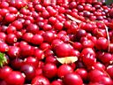

Новостя : Доскеры : Бродяги : Фотосы : Поприколу : Пиши сюда ! : ЧаВо? :
|
Don`t worry,
Be Happy ! Новостя : Доскеры : Бродяги : Фотосы : Поприколу : Пиши сюда ! : ЧаВо? : |
|
БРОДЯГИ-2006: |
Летом здорово погонять с ветерком на велосе,
там где есть дороги и проезжаемые тропинки...
Рекомендую посмотреть: Рекомендую прочитать: САТ-ОК. ЗЕМЛЯ СОЛЕНЫХ СКАЛ
|
 17 сентября 2006. Клюква. Осень.Осенние краски. Спелая клюква. Вело-прогулка на болото... |
|
 10
- 20 августа 2006. Летний велосипедный Мамай 10
- 20 августа 2006. Летний велосипедный МамайСовместили приятное с полезным - нашли горное озеро и подлатали крышу зимухи. Впервые на Мамае - Андрюшка !... |
|
 5
- 6 августа 2006. Прогулка на Тальцинский 5
- 6 августа 2006. Прогулка на ТальцинскийМаршрут выходного дня с грозой и градом - непогода во всей красе. Впервые на Тальцинском - Дашусик и Аня... |
|
 Июль
- август 2006. Малое Море. Безвременье Июль
- август 2006. Малое Море. БезвременьеНе хватает времени и сил причесать мысли, фразы ... пока только наброски... и фото ... |
|
 18,19,20,21
июля 2006. Соболиное озеро 18,19,20,21
июля 2006. Соболиное озеро Дождливый отдых. Жемчужина Хамар-Дабана. Экстремальная переправа... |
|
 15,16,17
июля 2006. Теплые озера - Тальцинский 15,16,17
июля 2006. Теплые озера - Тальцинский Если пойти на Тальц в одного, то обязательно встретишь хороших людей и найдешь новых друзей. Проверено временем... |
|
 2
июля 2006. Велопокатушка на Теплые озера 2
июля 2006. Велопокатушка на Теплые озераПросто прокатились, искупались, отдохнули. Хорошее начало отпуска... |
|